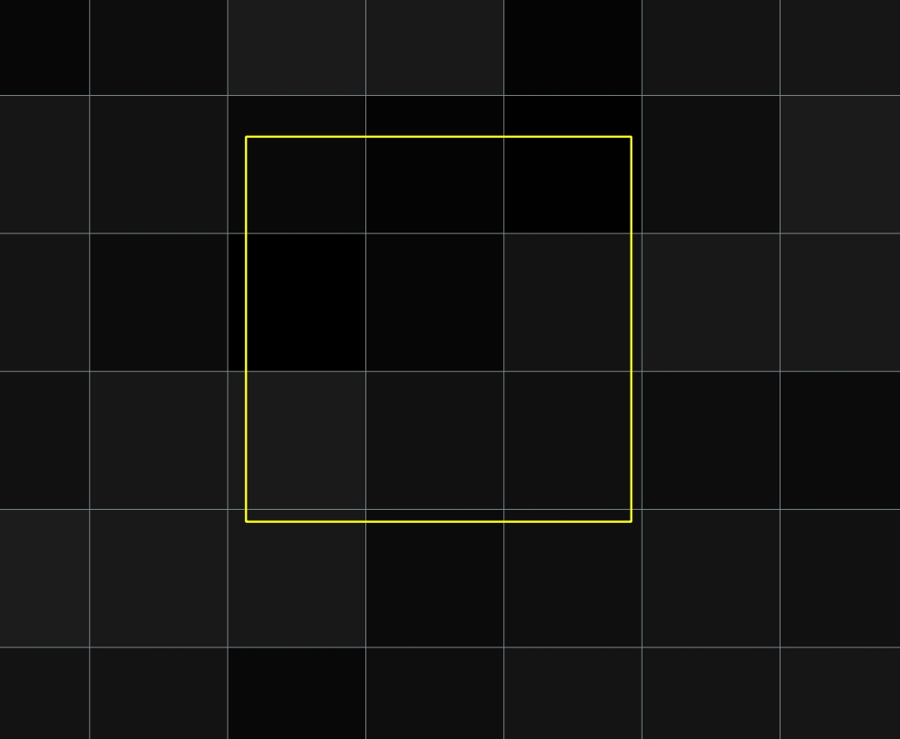
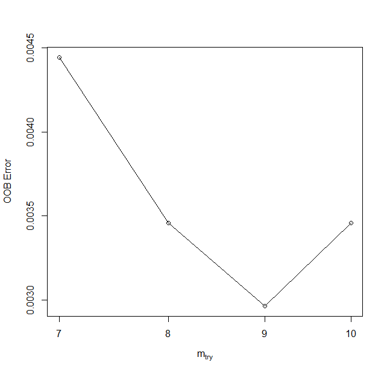
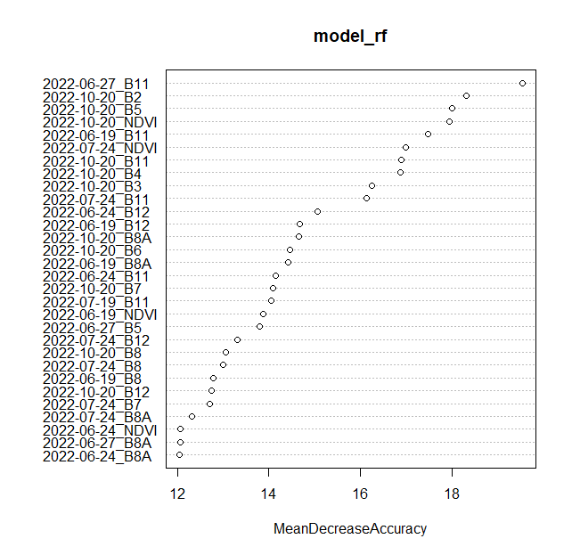
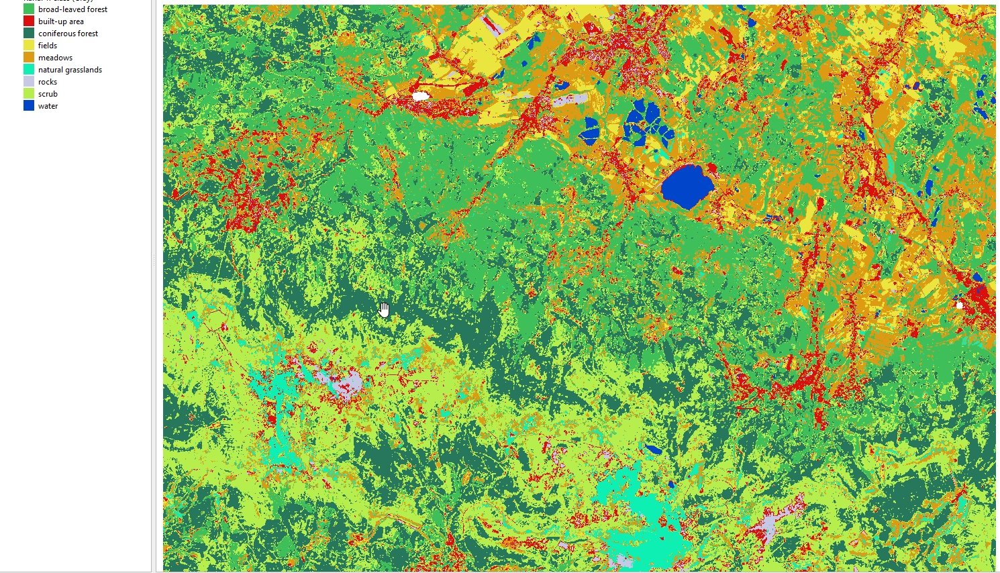

Multitemporal classification - Exercise
Exercise - Multitemporal classification of land cover in Karkonosze Mountains region
In this exercise, you will gain practical experience with the topic of multitemporal classification, which is presented in Theme 4 theoretical part. You will employ a multitemporal Sentinel-2 dataset to carry out a Random Forest classification. Upon completing the necessary steps, you’ll have the ability to compare results obtained from different sets of input data, as well as evaluate the accuracy attained for various classes.
The primary aim of this exercise is to demonstrate one of the many approaches you can employ in performing multitemporal satellite image classification. Based on the techniques learned here, you’ll be equipped to apply these methods to a range of input data types, algorithms, and accuracy assessment procedures.
Basic preparation
Prerequisites
For this exercise you will need the following software, data and tools:
- Software - R and RStudio. You can access environment setup tutorial for the whole Module 2 here: R environment setup tutorial. After following the setup guide you should have all the necessary packages installed.
- Data - downloaded data provided through Zenodo. If you went through Module 2 Theme 3 exercise Pipeline 1 you can download image the data from your Google Drive.
Follow the suggested working environment setup in order for the provided relative paths to work properly.
Data
Imagery data
The imagery provided for this exercise consists of Sentinel-2 satellite imagery. The process of data preparation is described in the Module 2 Theme 3 exercise Pipeline 1.
Reference data
The process of reference data preparation is describe in this document. Click here to open in in a new tab.
Reference data preparation tutorial
Loading libraries and reading data
Initiate a new R script in RStudio within your working directory (new file icon is in top left corner) and name it, for instance, theme_4_exercise_script.R.
In this newly created script, we aim to load the necessary libraries and data, as well as set up some initial variables, which we will utilize later.
Begin by loading libraries that contain the functions essential for completing this exercise (terra, dplyr, caret, and randomForest) into your environment.
# raster and vector I/O and processing
library(terra)
# tabular data manipulation
library(dplyr)
# training/test layers preparation
library(caret)
# RF model preparation
library(randomForest)
At this point, we can import the necessary data into the RStudio environment. We require a reference vector layer and multiband image data. These can be found in the dedicated folder for Theme 4.
# object representing reference vector data
reference_data <- vect("theme_4_exercise/data_exercise/T4_reference_data.shp")
# object representing multiband raster with all the available bands
image_data <- rast("theme_4_exercise/data_exercise/T4_image_data.tif")
The bands in the multiband raster are arranged by date: the first 11 bands (10 spectral bands + NDVI) correspond to the first acquisition period (2022-06-19), with subsequent periods following in order.
The reference data comprises 450 polygons, with 50 each for nine classes. You can get an overview of both the image and reference data by executing the following commands in the R console.
image_data
reference_data
class : SpatRaster
dimensions : 1687, 2459, 66 (nrow, ncol, nlyr)
resolution : 10, 10 (x, y)
extent : 534440, 559030, 5619440, 5636310 (xmin, xmax, ymin, ymax)
coord. ref. : WGS 84 / UTM zone 33N (EPSG:32633)
source : T4_image_data.tif
names : 2022-~19_B2, 2022-~19_B3, 2022-~19_B4, 2022-~19_B5, 2022-~19_B6, ...
class : SpatVector
geometry : polygons
dimensions : 450, 2 (geometries, attributes)
extent : 534690.7, 558829.3, 5619701, 5635629 (xmin, xmax, ymin, ymax)
source : T4_reference_data.shp
coord. ref. : WGS 84 / UTM zone 33N (EPSG:32633)
names : ID class
type : <int> <chr>
values : 1 coniferous forest
2 coniferous forest
3 coniferous forest
Pixel values extraction
With the data now loaded, our next step is to extract all the image values corresponding to each of the reference polygons. Each reference polygon encompasses nine 10x10 m pixels. Consequently, after extraction, we’ll have a total of 4050 samples (450 x 9) to utilize in our training and validation data.
The extract function from the terra package, also denoted as terra::extract, is employed to read pixel values based on the vector layer’s location. This vector layer could either be a point layer (yielding one pixel value) or a polygon layer (yielding multiple pixel values).
We’ll feed three arguments into the terra::extract function:
x- a variable containing the image datay- a variable containing the vector reference polygonsexact- if set toTRUE, an additional coverage fraction for each cell is added as a column
The extraction results will be stored in the pixel_reference variable as a data frame. This function may take a few minutes to execute.
pixel_reference <- extract(image_data, reference_data, exact = TRUE)
Inspect the produced extraction results.
nrow(pixel_reference)
colnames(pixel_reference)
[1] 4066
[1] "ID" "2022-06-19_B2" "2022-06-19_B3" "2022-06-19_B4"
[5] "2022-06-19_B5" "2022-06-19_B6" "2022-06-19_B7" "2022-06-19_B8"
[9] "2022-06-19_B8A" "2022-06-19_B11" "2022-06-19_B12" "2022-06-19_NDVI"
[13] "2022-06-24_B2" "2022-06-24_B3" "2022-06-24_B4" "2022-06-24_B5"
[17] "2022-06-24_B6" "2022-06-24_B7" "2022-06-24_B8" "2022-06-24_B8A"
[21] "2022-06-24_B11" "2022-06-24_B12" "2022-06-24_NDVI" "2022-06-27_B2"
[25] "2022-06-27_B3" "2022-06-27_B4" "2022-06-27_B5" "2022-06-27_B6"
[29] "2022-06-27_B7" "2022-06-27_B8" "2022-06-27_B8A" "2022-06-27_B11"
[33] "2022-06-27_B12" "2022-06-27_NDVI" "2022-07-19_B2" "2022-07-19_B3"
[37] "2022-07-19_B4" "2022-07-19_B5" "2022-07-19_B6" "2022-07-19_B7"
[41] "2022-07-19_B8" "2022-07-19_B8A" "2022-07-19_B11" "2022-07-19_B12"
[45] "2022-07-19_NDVI" "2022-07-24_B2" "2022-07-24_B3" "2022-07-24_B4"
[49] "2022-07-24_B5" "2022-07-24_B6" "2022-07-24_B7" "2022-07-24_B8"
[53] "2022-07-24_B8A" "2022-07-24_B11" "2022-07-24_B12" "2022-07-24_NDVI"
[57] "2022-10-20_B2" "2022-10-20_B3" "2022-10-20_B4" "2022-10-20_B5"
[61] "2022-10-20_B6" "2022-10-20_B7" "2022-10-20_B8" "2022-10-20_B8A"
[65] "2022-10-20_B11" "2022-10-20_B12" "2022-10-20_NDVI" "fraction"
Note: The ID column is not drawn from the original data source but is generated by the extract function as the index of the record from which values are extracted. In the case of the data prepared for this exercise, the ID column of the reference data matches the ID in the data frame with extracted values. If you wish to replicate this part of the exercise with your own input reference data, we suggest adding a column/attribute with row index numbers. For example:
ref <- vect("source.shp")
ref_df <- as.data.frame(ref)
ref_id <- cbind(ref_df, ID = seq(1, nrow(ref_df)))
If everything proceeded as expected, there should be 4066 rows in the resulting data frame. Earlier, we noted that, given each reference polygon is 30x30 meters in size, we would anticipate a total of 4050 pixel values. A higher number suggests some polygons are misaligned, intersecting parts of additional polygons. To rectify this, we aim to filter out those pixels with minimal coverage by applying a data frame filter to rows with a coverage fraction of less than 0.5.

Polygon id == 2 visible misalignment in relation to image pixel mesh.
pixel_reference <- filter(pixel_reference, fraction > 0.5)
Inspect the filtered result.
nrow(pixel_reference)
colnames(pixel_reference)
[1] 4050
[1] "ID" "2022-06-19_B2" "2022-06-19_B3" "2022-06-19_B4"
[5] "2022-06-19_B5" "2022-06-19_B6" "2022-06-19_B7" "2022-06-19_B8"
[9] "2022-06-19_B8A" "2022-06-19_B11" "2022-06-19_B12" "2022-06-19_NDVI"
[13] "2022-06-24_B2" "2022-06-24_B3" "2022-06-24_B4" "2022-06-24_B5"
[17] "2022-06-24_B6" "2022-06-24_B7" "2022-06-24_B8" "2022-06-24_B8A"
[21] "2022-06-24_B11" "2022-06-24_B12" "2022-06-24_NDVI" "2022-06-27_B2"
[25] "2022-06-27_B3" "2022-06-27_B4" "2022-06-27_B5" "2022-06-27_B6"
[29] "2022-06-27_B7" "2022-06-27_B8" "2022-06-27_B8A" "2022-06-27_B11"
[33] "2022-06-27_B12" "2022-06-27_NDVI" "2022-07-19_B2" "2022-07-19_B3"
[37] "2022-07-19_B4" "2022-07-19_B5" "2022-07-19_B6" "2022-07-19_B7"
[41] "2022-07-19_B8" "2022-07-19_B8A" "2022-07-19_B11" "2022-07-19_B12"
[45] "2022-07-19_NDVI" "2022-07-24_B2" "2022-07-24_B3" "2022-07-24_B4"
[49] "2022-07-24_B5" "2022-07-24_B6" "2022-07-24_B7" "2022-07-24_B8"
[53] "2022-07-24_B8A" "2022-07-24_B11" "2022-07-24_B12" "2022-07-24_NDVI"
[57] "2022-10-20_B2" "2022-10-20_B3" "2022-10-20_B4" "2022-10-20_B5"
[61] "2022-10-20_B6" "2022-10-20_B7" "2022-10-20_B8" "2022-10-20_B8A"
[65] "2022-10-20_B11" "2022-10-20_B12" "2022-10-20_NDVI"
An additional step is to reintegrate the class information from the original reference_data into the extracted values. To accomplish this, we’ll create another data frame based on the original attributes of the reference_data vector file. We can then merge information from the two data frames using the identifying values from the ID columns.
reference_class <- as.data.frame(reference_data)
pixel_reference <- merge(pixel_reference, reference_class,
by = "ID",
all = TRUE)
After this step, there should be an additional column in the data frame. Lastly, we aim to rearrange the columns so that they start with ID and class, followed by the names of the bands from which data was extracted. Since we’ve already filtered the data, we can discard the fraction column. To achieve this, we’ll use dplyr functions select and relocate: select to remove the fraction column and relocate to move the ID and class columns to the beginning of the data frame. The %>% operator, also known as a pipe-line operator from the magrittr package, is used to send the value from the previous function to the next.
pixel_reference <- select(pixel_reference, -fraction) %>%
relocate(ID, class)
colnames(pixel_reference)
[1] "ID" "class" "2022-06-19_B2" "2022-06-19_B3"
[5] "2022-06-19_B4" "2022-06-19_B5" "2022-06-19_B6" "2022-06-19_B7"
[9] "2022-06-19_B8" "2022-06-19_B8A" "2022-06-19_B11" "2022-06-19_B12"
[13] "2022-06-19_NDVI" "2022-06-24_B2" "2022-06-24_B3" "2022-06-24_B4"
[17] "2022-06-24_B5" "2022-06-24_B6" "2022-06-24_B7" "2022-06-24_B8"
[21] "2022-06-24_B8A" "2022-06-24_B11" "2022-06-24_B12" "2022-06-24_NDVI"
[25] "2022-06-27_B2" "2022-06-27_B3" "2022-06-27_B4" "2022-06-27_B5"
[29] "2022-06-27_B6" "2022-06-27_B7" "2022-06-27_B8" "2022-06-27_B8A"
[33] "2022-06-27_B11" "2022-06-27_B12" "2022-06-27_NDVI" "2022-07-19_B2"
[37] "2022-07-19_B3" "2022-07-19_B4" "2022-07-19_B5" "2022-07-19_B6"
[41] "2022-07-19_B7" "2022-07-19_B8" "2022-07-19_B8A" "2022-07-19_B11"
[45] "2022-07-19_B12" "2022-07-19_NDVI" "2022-07-24_B2" "2022-07-24_B3"
[49] "2022-07-24_B4" "2022-07-24_B5" "2022-07-24_B6" "2022-07-24_B7"
[53] "2022-07-24_B8" "2022-07-24_B8A" "2022-07-24_B11" "2022-07-24_B12"
[57] "2022-07-24_NDVI" "2022-10-20_B2" "2022-10-20_B3" "2022-10-20_B4"
[61] "2022-10-20_B5" "2022-10-20_B6" "2022-10-20_B7" "2022-10-20_B8"
[65] "2022-10-20_B8A" "2022-10-20_B11" "2022-10-20_B12" "2022-10-20_NDVI"
Save the extracted data frame to the external file in case you need to reload it, so you don’t have to wait for the extraction process to complete. By saving to .RDS file you can then read that file into custom variable name.
saveRDS(pixel_reference,
file = "theme_4_exercise/data_exercise/pixel_reference.RDS")
# in case you need to load it use the command below
# pixel_reference <- readRDS("theme_4_exercise/data_exercise/pixel_reference.RDS")
Classification scenario 1: the entire dataset
Training/validation data preparation
Now that we have the reference dataset prepared, we can commence the classification scenario. Initially, we’ll divide the complete dataset into a training set and a validation set. By executing the commands below, we can check the number of samples for each class we have, as well as the number of reference polygons per class.
table(pixel_reference$class)
table(reference_data$class)
> table(pixel_reference$class)
broad-leaved forest built-up area coniferous forest
450 450 450
fields meadows natural grasslands
450 450 450
rocks scrub water
450 450 450
> table(reference_data$class)
broad-leaved forest built-up area coniferous forest
50 50 50
fields meadows natural grasslands
50 50 50
rocks scrub water
50 50 50
To ensure reproducibility of partitioning we will set seed.
set.seed(14)
The partitioning process consists of two steps. The first step involves randomly selecting 50% of polygons from each class and storing their position number in the train_index variable. This approach ensures that pixels from a single polygon are used exclusively in either the training or validation set, preventing overlap. Given that each polygon contains the same number of pixels, we will have an equal number of training and validation samples. This balanced division of the reference dataset into training and validation sets aims to enhance model performance and reduce any bias towards specific classes.
In the second step, we’ll filter the entire pixel_reference set into train_data and val_data. This is done using the train_index variable to extract corresponding values by the ID column from the pixel_reference table.
train_index <- createDataPartition(reference_data$class, p = 0.5, list = FALSE)
train_data <- pixel_reference[ pixel_reference$ID %in% train_index, ]
val_data <- pixel_reference[ !(pixel_reference$ID %in% train_index), ]
Now we should have two sets of equal number of reference pixels for each class.
table(train_data$class)
table(val_data$class)
> table(train_data$class)
broad-leaved forest built-up area coniferous forest
225 225 225
fields meadows natural grasslands
225 225 225
rocks scrub water
225 225 225
> table(val_data$class)
broad-leaved forest built-up area coniferous forest
225 225 225
fields meadows natural grasslands
225 225 225
rocks scrub water
225 225 225
Parameters tuning
In order to achieve a satisfying result we want to tune the model parameters. One of the Random Forest algorithm parameter is mtry, which is the number of random variables used in each tree. To find the value, which should yield the highest accuracy numbers we will use tuneRF function from the randomForest package.
The function takes several arguments:
x(first argument) - matrix or data frame of predictor variables;y(second argument) - response vector (factor for classification);ntreeTry- number of trees used during the tuning step;improve- the (relative) improvement in out-of-bag (OOB) error must be at least this much for the search to continue;stepFactor- at each iteration,mtryvalue is inflated (or deflated) by this value.
We will again set seed and assign the function’s results to tune variable.
set.seed(141)
tune <- tuneRF(train_data[, 3:length(train_data)],
as.factor(train_data$class),
ntreeTry = 500,
improve = 0.001,
stepFactor = 1.2)
tune
> tune
mtry OOBError
7.OOB 7 0.004444444
8.OOB 8 0.003456790
9.OOB 9 0.002962963
10.OOB 10 0.003456790

mtry parameter tuning.
The lowest Out-Of-Bag (OOB) error values were achieved with an mtry value of 9. Theoretically, a higher mtry value results in a more robust model, but it can also increase the correlation among the variables chosen for the split. In this case, we will not test different values and will set the mtry parameter in the model to 9 due to its lowest error.
Model
The next step after tuning the parameters is training the classification model. The randomForest function from the package of the same name is an implementation of the original Random Forest algorithm. The following code snippet uses this function with the following arguments:
x(first argument) - a data frame or a matrix of predictors (fromtrain_datavariable);y(second argument) - a response vector (a factor for classification);ntree- the number of trees used to produce the final model; 500 is a number that has been empirically tested to usually yield satisfactory results;mtry- number of variables randomly sampled as candidates at each split (tuned in the previous step);importance- a boolean (TRUE/FALSE) indicating whether the model should store variable importance (required for producing the plots);do.trace- useful for keeping track of the modelling progress.
model_rf <- randomForest(train_data[ , 3:length(train_data)],
as.factor(train_data$class),
ntree = 500,
mtry = 9,
importance = TRUE,
do.trace = 50)
To be able to access the model later it is recommended to save it locally. Create new results folder to store files produced in this script.
saveRDS(model_rf, file = "theme_4_exercise/results/model_rf.RDS")
Accuracy assessment
If we access the variable model_rf (by running this variable in console) we will see the basic model information and confusion matrix calculated for the training data.
> model_rf
Call:
randomForest(x = train_data[, 3:length(train_data)],
y = as.factor(train_data$class),
ntree = 500,
mtry = 9,
importance = TRUE,
do.trace = 50)
Type of random forest: classification
Number of trees: 500
No. of variables tried at each split: 9
OOB estimate of error rate: 0.4%
Confusion matrix
Confusion matrix:
broad-leaved forest built-up area coniferous forest
broad-leaved forest 225 0 0
built-up area 0 223 0
coniferous forest 0 0 225
fields 0 0 0
meadows 0 0 0
natural grasslands 0 0 0
rocks 0 5 0
scrub 0 0 0
water 0 0 0
fields meadows natural grasslands rocks scrub water
broad-leaved forest 0 0 0 0 0 0
built-up area 0 0 0 2 0 0
coniferous forest 0 0 0 0 0 0
fields 224 1 0 0 0 0
meadows 0 225 0 0 0 0
natural grasslands 0 0 225 0 0 0
rocks 0 0 0 220 0 0
scrub 0 0 0 0 225 0
water 0 0 0 0 0 225
class.error
broad-leaved forest 0.000000000
built-up area 0.008888889
coniferous forest 0.000000000
fields 0.004444444
meadows 0.000000000
natural grasslands 0.000000000
rocks 0.022222222
scrub 0.000000000
water 0.000000000
Our primary objective is to evaluate the performance of the model using the reference data. To obtain an accurate measure of the model’s effectiveness, it’s crucial to test it against data it hasn’t seen during the training process. This subset of the data is known as the validation set. To achieve this, we’ll make use of the val_data we prepared earlier. After prediction, we’ll contrast the model’s predicted classes against the true classes in the validation dataset.
predicted_rf <- predict(model_rf, val_data[ , 3:length(val_data)])
confusion_matrix_predicted_rf <- confusionMatrix(predicted_rf,
as.factor(val_data$class),
mode = "everything")
confusion_matrix_predicted_rf
Confusion Matrix and Statistics
Reference
Prediction broad-leaved forest built-up area coniferous forest
broad-leaved forest 217 0 9
built-up area 0 200 0
coniferous forest 3 0 209
fields 0 5 0
meadows 0 3 0
natural grasslands 0 0 0
rocks 0 10 0
scrub 5 1 7
water 0 6 0
Reference
Prediction fields meadows natural grasslands rocks scrub water
broad-leaved forest 0 0 0 0 0 0
built-up area 2 0 0 25 4 0
coniferous forest 0 0 0 0 9 0
fields 194 50 0 0 0 0
meadows 29 166 19 0 2 0
natural grasslands 0 9 206 0 0 0
rocks 0 0 0 200 5 0
scrub 0 0 0 0 205 0
water 0 0 0 0 0 225
Overall Statistics
Accuracy : 0.8998
95% CI : (0.8858, 0.9125)
No Information Rate : 0.1111
P-Value [Acc > NIR] : < 2.2e-16
Kappa : 0.8872
Mcnemar's Test P-Value : NA
Statistics by Class:
Class: broad-leaved forest Class: built-up area
Sensitivity 0.9644 0.88889
Specificity 0.9950 0.98278
Pos Pred Value 0.9602 0.86580
Neg Pred Value 0.9956 0.98606
Precision 0.9602 0.86580
Recall 0.9644 0.88889
F1 0.9623 0.87719
Prevalence 0.1111 0.11111
Detection Rate 0.1072 0.09877
Detection Prevalence 0.1116 0.11407
Balanced Accuracy 0.9797 0.93583
Class: coniferous forest Class: fields Class: meadows
Sensitivity 0.9289 0.8622 0.73778
Specificity 0.9933 0.9694 0.97056
Pos Pred Value 0.9457 0.7791 0.75799
Neg Pred Value 0.9911 0.9825 0.96733
Precision 0.9457 0.7791 0.75799
Recall 0.9289 0.8622 0.73778
F1 0.9372 0.8186 0.74775
Prevalence 0.1111 0.1111 0.11111
Detection Rate 0.1032 0.0958 0.08198
Detection Prevalence 0.1091 0.1230 0.10815
Balanced Accuracy 0.9611 0.9158 0.85417
Class: natural grasslands Class: rocks Class: scrub
Sensitivity 0.9156 0.88889 0.9111
Specificity 0.9950 0.99167 0.9928
Pos Pred Value 0.9581 0.93023 0.9404
Neg Pred Value 0.9895 0.98619 0.9889
Precision 0.9581 0.93023 0.9404
Recall 0.9156 0.88889 0.9111
F1 0.9364 0.90909 0.9255
Prevalence 0.1111 0.11111 0.1111
Detection Rate 0.1017 0.09877 0.1012
Detection Prevalence 0.1062 0.10617 0.1077
Balanced Accuracy 0.9553 0.94028 0.9519
Class: water
Sensitivity 1.0000
Specificity 0.9967
Pos Pred Value 0.9740
Neg Pred Value 1.0000
Precision 0.9740
Recall 1.0000
F1 0.9868
Prevalence 0.1111
Detection Rate 0.1111
Detection Prevalence 0.1141
Balanced Accuracy 0.9983
TASK
Identify classes with highest and lowest accuracy metrics. Start with F1.
Variable importance
One of the major advantages of models generated by the randomForest package is the wealth of information they provide, which can be further utilized to assess the model’s performance. The varImpPlot function from the randomForest package leverages the stored OOB errors to identify the best-performing predictors (bands). The importance values used to generate the plots are stored inside the model, which should be accessible via the model_rf variable. Setting type = 1 results in the production of a plot showing the mean decrease in accuracy measure. To learn more about this type of plot and type = 2 plots, type and run ?randomForest::importance() into the R console.
varImpPlot(model_rf, type = 1, n.var = 30)

Variable importance plot.
TASK
Identify terms and bands with the highest Mean Decrease Accuracy values. Modify n.var parameter to see more or less variables.
Image classification using trained RF model
With our trained model, we can now classify the image data we have to produce a classification image. To do this, we will use the predict function from the terra package and provide the following arguments:
object- the image datamodel- the fitted statistical modelfilename- path to the result and file name with extensiondatatype- for the classification resultINT1U(0-255) will sufficena.rm- ignore cells with NA valuesoverwrite- save over existing file of the same name
The classification process should take approximately 2-4 minutes.
terra::predict(image_data, model_rf,
filename = "theme_4_exercise/results/predicted_image_all_bands.tif",
datatype = "INT1U",
na.rm = TRUE,
overwrite = TRUE)
TASK
Display the resulting image in QGIS. Use the attached symbology.clr file to assign class names and colors.

Predicted image (all variables).
Classification scenarios 2 and 3
Now that you have experienced the classification process, the next step is to apply this knowledge to scenarios 2 and 3.
- Scenario 2: Only spectral bands
- Scenario 3: Only NDVI bands
The workflow remains the same, but you need to modify the reference data to include only values from specific bands.
Reference for classification scenario 2
reference_scenario2 <- select(pixel_reference, -contains("NDVI"))
Reference for classification scenario 3
reference_scenario3 <- select(pixel_reference, ID, class, ends_with("NDVI"))
TASK
- Divide the reference datasets into training and validation subsets.
- Tune
mtryparameter. - Create and save Random Forest classification model.
- Apply the model to test (validation) data and image.
- Compare the accuracy results and visual images.
Optional additional tasks
After completing all the scenarios, consider comparing the results. You could create a table with the F1 accuracies for the class of interest in each scenario. Additionally, consider performing the following tests:
- Extract a single term and perform classification.
- Extract only the best-performing bands based on variable importance from a selected scenario and repeat the classification
- Test different
mtryvalues and compare the results.
If you want to further explore the vast topic of classification consider reading the randomForest and caret packages documentation and experiment with different model tuning and classification parameters.
Data and software credits
Data
Sentinel-2 imagery European Space Agency - ESA/ Terms of use processed in and downloaded from Google Earth Engine by Gorelick et al., 2017
Software
- R Core Team (2023). R: A language and environment for statistical computing. R Foundation for Statistical Computing, Vienna, Austria. https://www.R-project.org/.
- A. Liaw and M. Wiener (2002). Classification and Regression by randomForest. R News 2(3), 18–22.https://CRAN.R-project.org/package=randomForest
- Hijmans R (2023). terra: Spatial Data Analysis. R package version 1.7-39, https://CRAN.R-project.org/package=terra
- Kuhn, M. (2008). Building Predictive Models in R Using the caret Package. Journal of Statistical Software, 28(5), 1–26. https://doi.org/10.18637/jss.v028.i05 https://CRAN.R-project.org/package=caret
- Wickham H, François R, Henry L, Müller K, Vaughan D (2023). dplyr: A Grammar of Data Manipulation. R package version 1.1.2, https://CRAN.R-project.org/package=dplyr
Source code
You can find the entire code used in this exercise here
# raster and vector I/O and processing
library(terra)
# tabular data manipulation
library(dplyr)
# training/test layers preparation
library(caret)
# RF model preparation
library(randomForest)
# object representing reference vector data
reference_data <- vect("theme_4_exercise/data_exercise/T4_reference_data.shp")
# object representing multiband raster with all the available bands
image_data <- rast("theme_4_exercise/data_exercise/T4_image_data.tif")
image_data
reference_data
pixel_reference <- extract(image_data, reference_data, exact = TRUE)
nrow(pixel_reference)
colnames(pixel_reference)
pixel_reference <- filter(pixel_reference, fraction > 0.5)
nrow(pixel_reference)
colnames(pixel_reference)
reference_class <- as.data.frame(reference_data)
pixel_reference <- merge(pixel_reference, reference_class,
by = "ID",
all = TRUE)
pixel_reference <- select(pixel_reference, -fraction) %>%
relocate(ID, class)
saveRDS(pixel_reference,
file = "theme_4_exercise/data_exercise/pixel_reference.RDS")
colnames(pixel_reference)
set.seed(14)
train_index <- createDataPartition(reference_data$class, p = 0.5, list = FALSE)
train_data <- pixel_reference[ pixel_reference$ID %in% train_index, ]
val_data <- pixel_reference[ !(pixel_reference$ID %in% train_index), ]
table(train_data$class)
table(val_data$class)
set.seed(141)
tune <- tuneRF(train_data[, 3:length(train_data)],
as.factor(train_data$class),
ntreeTry = 500,
improve = 0.001,
stepFactor = 1.2)
tune
model_rf <- randomForest(train_data[ , 3:length(train_data)], as.factor(train_data$class),
ntree = 500,
mtry = 9,
importance = TRUE,
do.trace = 50)
saveRDS(model_rf,
file = "theme_4_exercise/results/model_rf.RDS")
model_rf
predicted_rf <- predict(model_rf, val_data[ , 3:length(val_data)])
confusion_matrix_predicted_rf <- confusionMatrix(predicted_rf, as.factor(val_data$class), mode = "everything")
confusion_matrix_predicted_rf
varImpPlot(model_rf, type = 1, n.var = 30)
terra::predict(image_data, model_rf,
filename = "theme_4_exercise/results/predicted_image_all_bands.tif",
datatype = "INT1U",
na.rm = TRUE,
overwrite = TRUE)